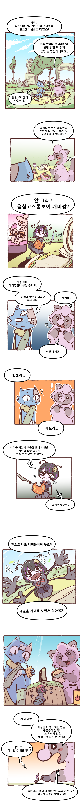
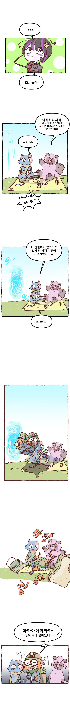
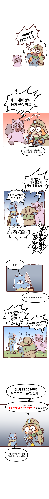
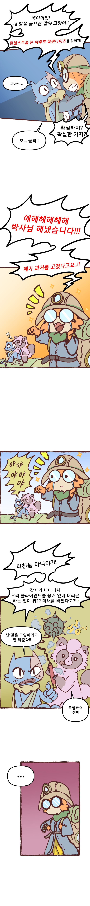
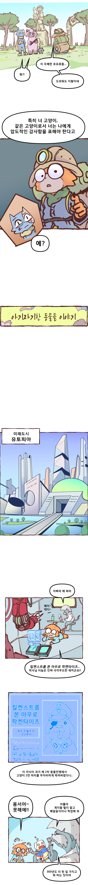
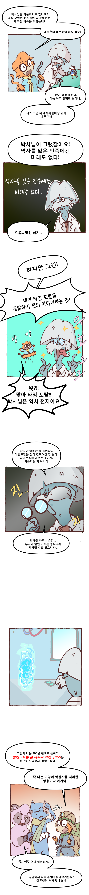
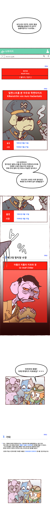
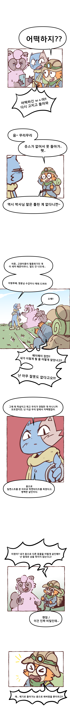
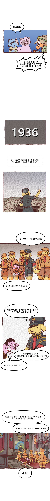
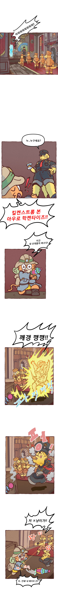
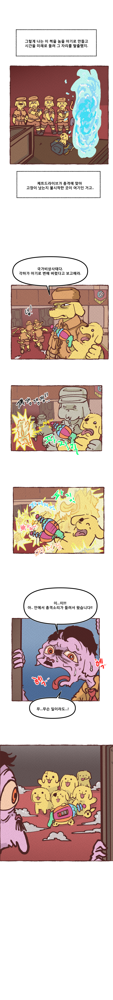
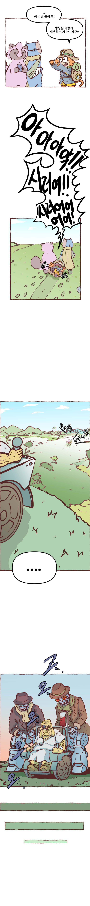
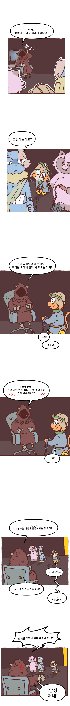
매주 수요일날 한편씩 올려보겠수













매주 수요일날 한편씩 올려보겠수
댓글
수집 당시 댓글 35개
폰드123 · 11.11 12:03:03
가면군 · 11.11 12:12:42
· 감자와수달 · 11.11 13:10:02
· 가면군 · 11.11 13:22:39
· ㅇㅇ · 11.11 17:29:57
· 가면군 · 11.11 17:40:17
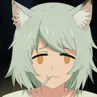
푹신포근피터 · 11.11 13:10:15
· 감자와수달 · 11.11 13:40:14
· 푹신포근피터 · 11.11 13:41:04
카갤러1 · 11.11 13:50:30
solish · 11.11 13:56:35
· ㅇㅇ · 11.11 18:11:41
· 감자와수달 · 11.11 18:30:40
helixnebula · 11.11 15:56:32
· 감자와수달 · 11.11 18:30:58
Josta · 11.11 16:54:25
· 감자와수달 · 11.11 18:32:23
카갤러2 · 11.11 16:59:30
· 감자와수달 · 11.11 18:31:22
ㅇㅇ · 11.11 17:27:03
카갤러3 · 11.11 19:55:46
카갤러4 · 11.11 20:25:38
피타라텔레스 · 11.11 23:14:57
땨뗘(봇) · 11.12 00:55:05
암타황제강시현 · 11.12 00:57:12
rxde · 11.12 01:03:10
하사비스경 · 11.12 01:20:47
ㅇㅇㅇㅇㄴ · 11.12 02:58:25
ㅇㅇ · 11.12 09:09:29
ㅇㅇ · 11.12 10:08:04
ㅇㅇ · 11.12 10:34:54
ㅇㅇ · 11.12 12:32:25
프라탑30층 · 11.12 12:49:32
ㅇㅇ · 11.12 13:57:50
초등학생이다 · 11.12 16:35:46